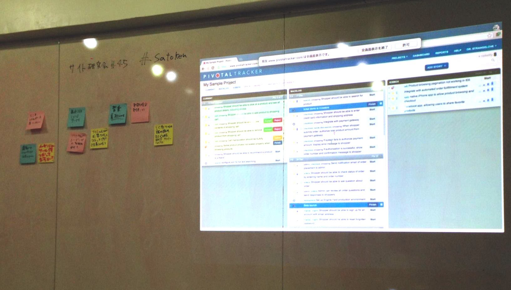

レポート vol.45 @aipcafe 2014/11/15

zusaar イベント告知ページ http://www.zusaar.com/event/9727003
Togetterまとめ http://togetter.com/li/746068
司会あみだくじ→ @Web1987_Tweet
お題
@nobkz ランチパスポートっていいよね。
ランチがお得になる！！(500円 ~ )
★「ランチパスポート天神・博多」
★LINEもやってるよね。→
お得に楽しめちゃう LINE@イベント！「1COIN WALK福岡」で食べまくってきた
来客者が来た時用に使う。 = お財布に優しい。
スタンプを集める楽しさ。
Watanabeさん メッセンジャーツール使ってますか？
コミュニケーション用 / ビジネス用 /
参加者が普段から使用しているメッセンジャーツールや動画チャット、タスク看板など
★skype
skype beta
★Typetalk（タイプトーク）
typetalkいい。 @nobkz さん、一押し！
typetalk APIが揃ってる!
サポートも充実@typetalk https://twitter.com/typetalkin
★slack
slack 他のサービスとの連携が充実。
参考記事
SlackとRedmineを連携し、登録したチケットの更新を通知する方法
http://liginc.co.jp/web/programming/otherprogramming/97710
社内のチャットツールにSlackを採用したらこうなった
★チャットワークス
スーツ系の人と会話する時はチャットワークスは欠かせませんよね。
海外の人気なメッセンジャーツールのレイアウトはだいたい2カラム。
@Web1987_Tweet 遠隔でのコミュニケーション方法ツール
「メッセンジャーツール使ってますか？」からの流れから。
★sqwiggle
リモートワーク&リモートオフィスではビデオチャットツール「Sqwiggle」が便利。
関連記事
8 Helpful Online Tools To Keep Your Company On Track
Sqwiggle が良いという話、またはリモートでアジャイル開発をどう進めるか
★Pivotal Tracke (ピボタルトラッカー)
シンプルな、ストーリーベースのプロジェクト計画づくりのためのツール
★eylean
こちらもタスク看板系ツール。サイトが可愛い。
Watanabeさん EC系サービスやツールの強み弱み
ECcube /BASE/カラーミー、各サービス見比べてみて....
★Goodsie
こういうのもありますよ！
★SPIKE（スパイク
決済手数料0％のオンライン決済サービス
@nobkz 色彩検定勉強してまう
勉強会してください
@Web1987_Tweet 音源素材を探してます。商用 / 無料
★jewelbeat
★Free Use Music
★freemusicarchive
@Web1987_Tweet 最近気になってるサービス / ガジェット /メディア
★360度カメラ
ただのカメラではありません。空間を切り取る全天球カメラです。
★Drone (ユーザーを自動追尾飛行する) https://www.kickstarter.com/projects/airdog/airdogworldsfirstautofollowactionsportsdron
★LifeCLIPS
★optimizely (A/Bテスト系)
★pplog(繋がれない系ブログ)
@nobkz クリエイティブコーディングを組み込む
Painting
第1回: クリエイティブコーディングの現状、openFrameworksのセットアップ
Creative Applications Network
福岡で勉強会あります！
「ゆるもくof福岡ver0.0.2、リリースしました。ご参加どうぞ。」
@takesi_yosimura セキュリティってどんな認識?
ばりかた勉強会
セキュリティキャンプ
Watanabeさん フリーの人が必要なモノ、コトって何？(仕事以外)
11月度のFWW_サイト研究会は少し早めに終了致しました！
参加者の皆様、ありがとうございました！
|
レポート >